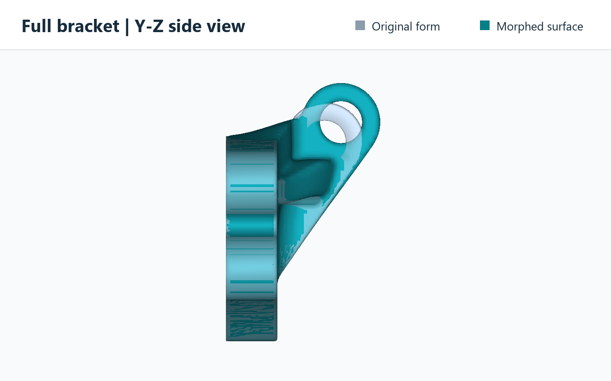
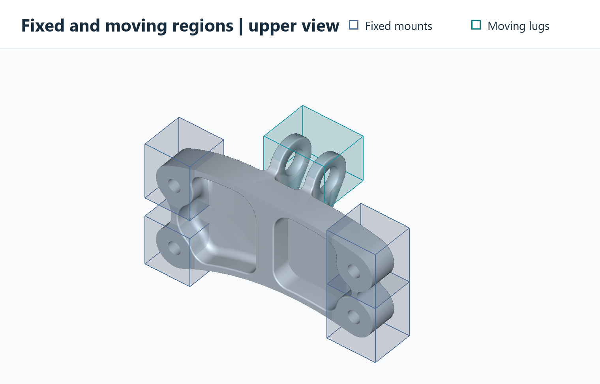
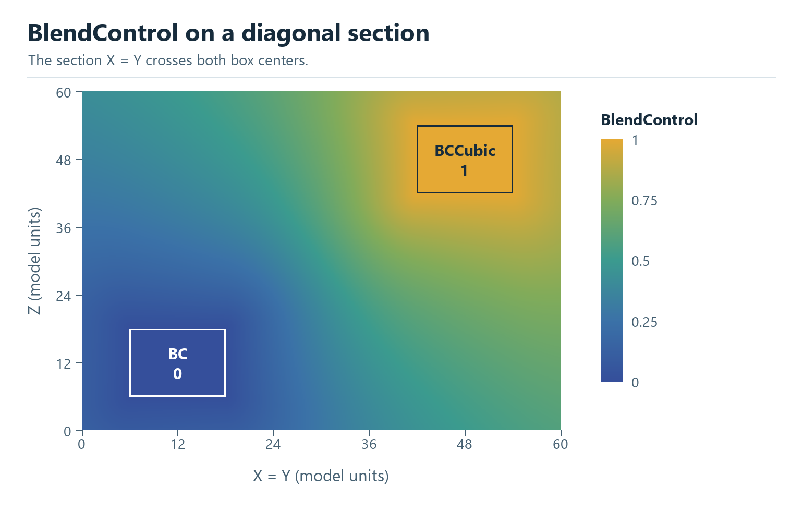
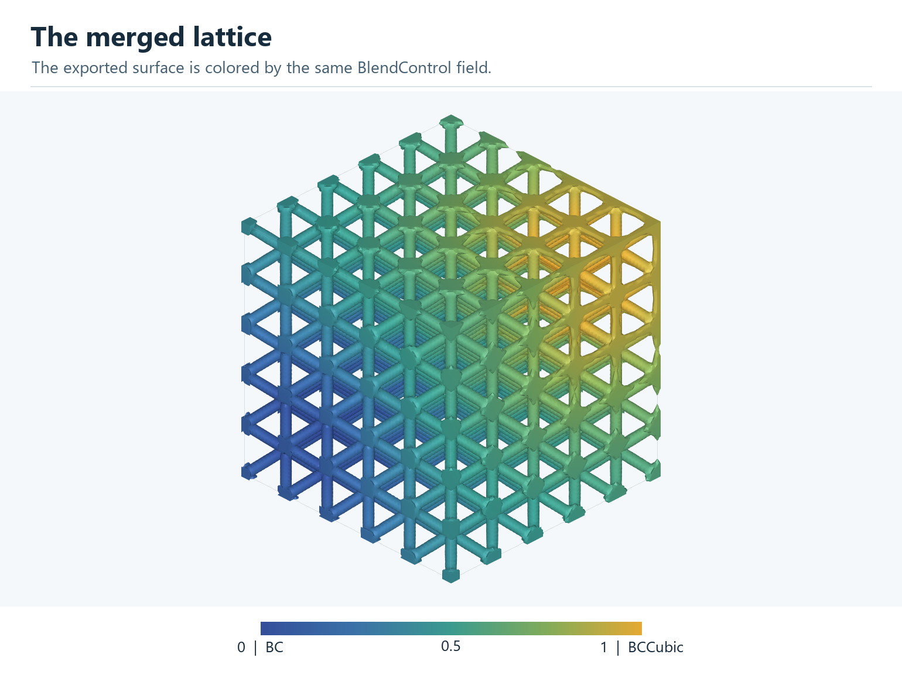
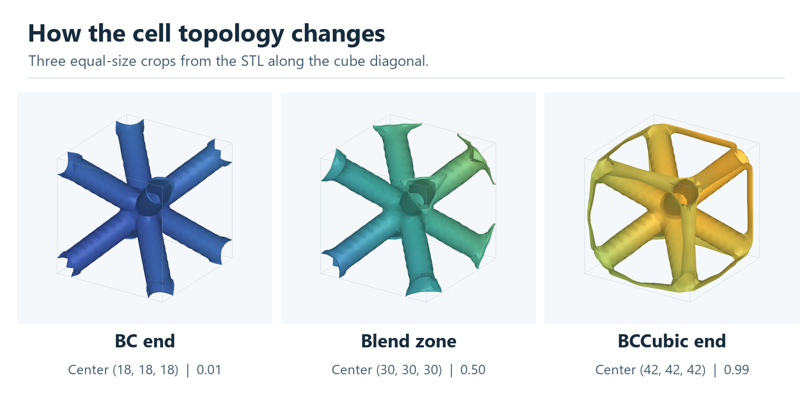

Field Operation 02#
Morph implicit field#
Proc_Field_Morph warps a scalar geometry or lattice field using selected
fixed and moving volumes. Python resolves the named fields and workflow settings.
The compiled Artisan.FieldMorph extension performs the RBF fit, deformation
evaluation, inverse mapping and trilinear resampling in C++ with OpenMP. This is
a CPU operation, independent of Setup.onGPU. The solver automatically selects
the CPU thread count from the OpenMP runtime budget and available processors;
there is no workflow parameter for thread selection. The quality report records
thread_selection as automatic and the budget as threads_selected.
Existing workflows containing threads must remove that key.
The complete example is Src/Test_json/FieldContainer/Morph/FieldMorph_MaskedBar.json.
It converts a closed bar surface to a geometry field, makes three masks with
Define_ScalarField_CombineGeometry, holds the base fixed, moves the upper
region 3 model units along X, and exports STL and HDF5 results.
{
"Proc_Field_Morph": {
"input_field": "Body",
"output_field": "lattice",
"domain_mask": "MorphDomain",
"fixed_mask": "FixedRegion",
"moving_regions": [
{"mask": "MovingRegion", "translation": [3.0, 0.0, 0.0]}
],
"quality_report": "morph-quality.json"
}
}
Engine bracket example#
Test_json/FieldContainer/Morph/EngineBracket_BoxMorph.json morphs the
engine bracket’s geometry field. The MovingLugs mask selects both upper
attachment lugs for a rigid translation of +7.38 along Y and +8.81 along Z,
in model units, with no rotation. The four regions in FixedMounts hold
the bolt mounts in place. The surrounding geometry deforms between those regions.


Full side view along X compares the translucent original form with the teal morphed result. The upper lugs translate together while the four bolt mounts stay fixed.#


Four boxes select the fixed bolt mounts. One box selects both upper lugs.#
Fields and masks#
input_field and output_field are named grid-field IDs. The reserved name
lattice means the active lattice field; both default to lattice. A named
output preserves the input. An output to lattice requires matching active
sampling coordinates. Export a named result with Export.GridFieldIDs.
File paths are not accepted in these two parameters: load files with
ReadGridField first. All fields must use the same strictly increasing,
rectilinear axes in model coordinates, with at least three samples per axis.
Nonuniform axis spacing is supported. Automatic mask resampling is not performed.
Make masks with default_value: 0, regional value: 1 and
overlap: "Maximum". Mask values must be finite and in [0, 1].
Values greater than or equal to mask_threshold select a region. Its default
is 0.5; the accepted interval is (0, 1]. Masks describe ORIGINAL coordinates at
the beginning of this operation; moving masks are not re-evaluated at the output
positions. With stages > 1, the command internally transports moving
selections to each stage’s starting configuration; the original named masks
are preserved. A later, separate morph operation must explicitly provide masks
appropriate to its own input configuration.
domain_maskis required. Outside it the deformation is zero.fixed_maskoptionally names a protected region. An empty string (default) omits this additional region; the outside and grid boundary remain fixed.moving_regionsis a nonempty list of up to 32 independent rigid movements. Each entry requires amask. A mask must select at least one grid point.The remaining space inside the domain supplies the deformable transition.
Use transition_width: 0 for selection masks. Intermediate mask values are
thresholded, not multiplied into the displacement as soft influence weights.
The masks are dimensionless; lengths use the model coordinate units.
Whole-region protection and transition space#
The implementation protects every cell incident to a selected grid vertex. It does this by adding one grid-cell halo to the fixed, outside and moving vertex sets before constructing the displacement grid. This conservative rule protects the entire volume selected by the thresholded, trilinearly interpolated mask, including points between grid vertices. It can extend protection slightly beyond the selected region. The outermost grid layer and its adjacent cells are fixed.
Protected halos must not overlap between moving groups or between moving and
fixed space. Leave at least a few free cells for the transition, and enough
sampling padding for the intended motion. Conflicts, empty masks and missing
transition space produce errors rather than applying an implicit priority rule.
Refine Setup.res when this one-cell protection is too coarse. Geometry already
lost in the sampled input cannot be recovered by morphing.
Movement parameters#
Each moving entry accepts:
Parameter |
Default |
Meaning |
|---|---|---|
|
[0, 0, 0] |
XYZ translation in model units, applied after rotation. |
|
[0, 0, 1] |
Finite nonzero axis, normalized internally. |
|
0 |
Right-hand rotation angle in degrees. |
|
[0, 0, 0] |
Rotation pivot in original model coordinates. |
Unknown parameter names are rejected, including misspellings inside moving entries. Scaling and other non-rigid prescribed transformations are not exposed in this version.
Staged movement#
stages is a positive integer, default 1. Use a larger count to divide the
total translation and rotation of every moving region into equal increments
within this same Proc_Field_Morph operation. For example, a translation of
20 units and rotation of 60 degrees with stages: 10 uses increments of
2 units and 6 degrees. Each stage deforms the preceding stage’s solved field,
not the original field. The rotation centre follows the accumulated translation
so the final rigid pose matches the requested rotation followed by translation.
The masks supplied by the user describe the original configuration. Moving
selections are regenerated internally from their original mask values and
accumulated rigid poses, using trilinear sampling and mask_threshold on the
same grid. They are not repeatedly resampled from earlier mask results. Fixed
and domain selections stay fixed. The user’s mask fields are never overwritten.
Moving selections must remain resolved by the sampling grid and must leave
space for the one-cell protective halos throughout the motion, including the
final pose. Enlarge the sampling box and domain explicitly when needed.
The stage count is fixed by the user: there are no automatic retries or changes
to the requested movement. Every stage must pass the existing deformation and
inverse checks. A failure identifies the stage and leaves the prior output field
and prior quality report unchanged. Intermediate solved fields are not published.
Default stages: 1 retains the single-stage numerical calculation.
The quality report adds stages, stages_completed and stage_reports.
Each stage records its progress, incremental movement and quality metrics.
For multiple stages, top-level gradient, inverse residual, inverse iteration,
fit residual and control-count metrics are maxima over individual stages.
The Jacobian determinant lower bound is the product of the stage bounds;
the maximum stage gradient is not a bound on the composed displacement.
inverse_tolerance applies to each stage, not to the complete accumulated
coordinate error. Repeated field resampling can blur thin features; staging
does not remove the need for sufficient transition space or a feasible target.
Numerical controls#
Parameter |
Default |
Meaning |
|---|---|---|
|
256 |
Total RBF control budget, 16 to 2048 and at least four per constraint group. Actual count may be smaller; the fixed group and moving groups share the budget. |
|
0 |
Wendland C2 radius in model units. Zero chooses half the grid diagonal. |
|
0.95 |
Maximum permitted bound on the displacement gradient, greater than zero and at most 0.99. Cannot disable the invertibility check. |
|
0.000001 |
Positive bound on inverse-coordinate error in model units, in exact arithmetic. Resampling and floating-point errors are additional. |
|
50 |
Per-query inverse iteration limit, 1 to 1000. |
|
1 |
Positive integer number of equal translation/rotation increments. Each stage starts from the preceding solved field. |
|
10000000 |
Explicit upper limit on input samples; minimum 27. This is not a total memory guarantee. Native working arrays require roughly 50 bytes per sample, in addition to existing fields, masks, Python temporaries and the dense control system. |
|
empty string |
Optional JSON report path. Parent directory must already exist. |
Control samples are selected deterministically from constraint interfaces. The native engine fits all three displacement components using one RBF matrix factorization. It evaluates the free grid vertices and enforces the prescribed rigid/zero displacement at every protected vertex. The final forward map uses this continuous trilinear displacement grid.
Every cell receives a bound on the displacement gradient throughout its interior,
not only at its corners. A global bound below one and the identity outside the
grid provide a sufficient injectivity condition. This conservative check may
reject a valid but large deformation. Reduce the movement, enlarge the free
transition, or improve control coverage. A lower max_gradient is more
restrictive. Near-one bounds can give a very small determinant lower bound and
do not imply good manufacturing or mesh quality.
For each output position, inverse mapping finds its original coordinate and
samples the original scalar field there. Failure to meet the inverse tolerance,
non-finite input, invalid masks, or failed invertibility checks leaves the output
field unchanged. The report is written before the result is published, so report
write failures also preserve the previous field. task.GenContainer["FieldMorphReport"]
contains the most recent successful report in SDK use.
Limits and subsequent operations#
A JSON workflow must fit in one calculation partition. Increase
Setup.memorylimitor use a coarser grid. Independent partitions would not share a consistent deformation and are explicitly rejected.The output is an implicit scalar field; it is not automatically a signed distance field. Re-distance separately before physical-distance offsets. Re-distancing does not undo stretched cells or struts.
The original setup geometry, mesh containers and mask fields are not changed. Subsequent operations that clip to the original setup geometry still use that geometry. Use explicit field operations when continuing with the new envelope.
Grid sampling and trilinear interpolation can change small geometric features. Keep the original input and compose edits carefully; repeated resampling can accumulate error. Existing FE mesh connectivity is not preserved.
The gradient bound checks the coordinate map. It is not a check of final wall thickness, manufacturability, or an extracted surface mesh’s quality.
Scalar Fields from Geometry Regions#
Define_ScalarField_CombineGeometry creates a named scalar field using
geometry regions. It samples the current lattice grid defined by Setup;
there is no separate grid_spacing. It does not change the lattice surface
field.
{
"Define_ScalarField_CombineGeometry": {
"field_id": "CellSize",
"default_value": 8.0,
"regions": [
{
"name": "Heel",
"geometry": "HeelRegion",
"value": 4.0,
"transition_width": 12.0
}
],
"overlap": "Minimum"
}
}
Here the field is 4 inside HeelRegion. Outside the region it smoothly
returns to 8 over a distance of 12, in the model’s units. HeelRegion must
already be loaded as a mesh-container ID, or be replaced with a mesh-file path.
Parameter |
Meaning |
|---|---|
|
Required name for the stored field, such as |
|
Required finite background for Minimum/Maximum. Interpolation modes use only regional values throughout the sampling domain. |
|
Required list of regions. Minimum/Maximum accept an empty list to create a constant field. Interpolation requires at least two regions. |
|
Required for each region: a mesh reference or primitive definition, and the finite value inside it. |
|
Optional region label used in messages. |
|
Outward transition distance. Default 0 gives a sharp change at grid points; interpolation can spread that change across a grid cell. |
|
|
|
Positive finite exponent for InverseDistance; default 1. Other modes require the default value. |
Minimum can only reduce the default; Maximum can only increase it.
Each positive-width transition uses a smoothstep blend. Choose Setup.res
fine enough to resolve the regions and transitions.
Interpolate between separate regions#
Linear, Smoothstep and InverseDistance preserve each region’s value
inside and on its boundary, then fill every exterior grid point using distances
to the region surfaces. This includes points beside, above and behind the regions.
There is no background falloff: default_value remains required for command
compatibility but does not participate. Set regional transition_width to 0
or omit it; nonzero widths are rejected in these modes.
For two regions A and B, let dA and dB be their positive exterior distances.
Linear uses t = dA/(dA+dB), with value (1-t)*valueA + t*valueB.
Smoothstep instead uses s = 3*t*t - 2*t*t*t, with value
(1-s)*valueA + s*valueB. Smoothstep requires exactly two regions and gives a
gentler join to constant regional values. This profile does not guarantee global
spatial smoothness around every edge of an arbitrary geometry.
Linear also accepts more than two regions and uses normalized inverse-distance
weights 1/d. InverseDistance uses weights 1/(d**distance_power), normalized to
sum to one. A larger power increases the influence of nearby regions. With power
1 it is identical to Linear. The field stays between the smallest and largest
regional values; very far from all finite regions it approaches their average.
Interpolation rejects overlapping regions, even when their assigned values match. Touching boundaries also conflict and are rejected. The error identifies both regions; separate them or select Minimum/Maximum. Separation is checked using geometry distances independently of the sampling grid and current partition. Near-contact geometry that cannot be certified as separate is rejected rather than silently interpolated. Mesh checks account for float32 distance precision; keep a clear gap, especially with large absolute model coordinates. A failed operation preserves an existing field with the same ID.
For example, two unit cubes occupying [0,1] and [3,4] along X, both with Y/Z in [0,1], can define values 4 and 8:
{
"Define_ScalarField_CombineGeometry": {
"field_id": "CellSize",
"default_value": 6.0,
"overlap": "Linear",
"regions": [
{"name": "CubeA", "geometry": {"type": "Box",
"center": [0.5, 0.5, 0.5], "size": [1, 1, 1]}, "value": 4.0},
{"name": "CubeB", "geometry": {"type": "Box",
"center": [3.5, 0.5, 0.5], "size": [1, 1, 1]}, "value": 8.0}
]
}
}
At (1.5,0.5,0.5), Linear gives 5; Smoothstep gives 4.625. At (2,0.5,0.5), both
give 6. Complete workflows in Test_json/FieldContainer/CombineGeometry are
CombineGeometry_Linear.json, CombineGeometry_Smoothstep.json and
CombineGeometry_InverseDistance.json. Each exports its named field to HDF5.
The last example includes a third region and uses distance power 2.
Mesh geometry is handled by MeshInterface. Supply a mesh-file path or a named mesh container containing a closed, manifold, non-self-intersecting triangle surface. Exact duplicate vertices are welded; open surfaces and degenerate triangles are rejected. Volume elements are not automatically converted to surfaces.
This is a generic scalar field, so zero and negative values are allowed.
For Tetrahedral Lattice Layout from a Size Field, every value must be strictly positive and
represents a target edge length. Connect it explicitly with
"size_field": "CellSize". The field name alone does not select its use.
Primitive and mesh region definitions#
Each regions[].geometry accepts an existing mesh-file path or mesh-container
ID, or an object with type equal to Box, Cylinder, Sphere or
Mesh. Type names are case-sensitive. Existing string-based workflows remain
valid. The SDK also accepts PathLike mesh references.
Primitive distances are evaluated analytically on the existing sampling grid; no tessellation or intermediate mesh file is needed. All lengths use the model coordinate units. Thus a radius of 8 means 8 mm when the model is in mm. The resulting field contains the specified regional/background values, not the primitive’s signed distances.
Type |
Required parameters |
Optional parameters |
|---|---|---|
|
|
|
|
|
|
|
|
None |
|
|
None |
Dimensions, radius and height must be strictly positive. Coordinates and angles must be finite. Axis vectors must be finite and nonzero; their magnitude is ignored. Unknown parameters inside a geometry object are rejected, so a typo or a parameter belonging to a different shape cannot silently change a region.
A box starts aligned with the model axes. Its optional right-hand axis-angle
rotation is applied about its center. size always describes the full lengths
along the box’s own axes. These controls place the selection volume; they do not
move the input body or replace Proc_Field_Morph movement parameters.
A cylinder is finite and capped. Its center is halfway between its end caps; the caps lie at plus/minus half the height along the normalized axis. A sphere has no orientation parameter.
For example, this box replaces the fixed-region mesh in the bar morph example:
{
"Define_ScalarField_CombineGeometry": {
"field_id": "FixedRegion",
"default_value": 0.0,
"overlap": "Maximum",
"regions": [
{
"name": "Fixed base",
"geometry": {
"type": "Box",
"center": [0.0, 0.0, 4.0],
"size": [16.0, 16.0, 12.0]
},
"value": 1.0,
"transition_width": 0.0
}
]
}
}
It spans X/Y = -8 to 8 and Z = -2 to 10. Other geometry objects include:
{"type": "Box", "center": [0, 0, 4], "size": [16, 16, 12],
"rotation_axis": [0, 0, 1], "rotation_degrees": 30}
{"type": "Cylinder", "center": [0, 0, 54],
"axis": [0, 0, 1], "radius": 8, "height": 16}
{"type": "Sphere", "center": [0, 0, 54], "radius": 8}
{"type": "Mesh", "source": "fixed.inp"}
The last object is equivalent to "geometry": "fixed.inp" when assigned to
a region’s geometry key. source may instead be a loaded mesh ID.
Mesh surface validity requirements are unchanged.
All four types can coexist in one regions list. With Minimum or
Maximum, regions can have different values and transition widths and combine
with the background value. A zero
transition width includes sampled boundary points and changes sharply outside;
a positive width blends outwards over the specified model distance. Curved or
rotated boundaries are still represented at the sampling grid’s resolution.
Linear, Smoothstep and InverseDistance also accept these geometry
types. They require separate, non-touching regions and transition width 0.
They fill the entire exterior from regional distances without a background
falloff; see the interpolation rules in Scalar Fields from Geometry Regions.
For morphing masks use background 0, regional values 1, overlap Maximum
and transition width 0. Creating a larger primitive does not enlarge
Setup.Sample.Domain; ensure the sampling grid covers it. A later morph still
requires compatible mask grids and enough space between fixed/moving regions.
Complete runnable examples are in Test_json/FieldContainer/PrimitiveRegions:
ScalarField_Primitives.jsoncombines a rotated box, tilted cylinder, sphere and mesh into a generic scalar field, exported as HDF5.FieldMorph_PrimitiveMasks.jsoncreates the deformation, fixed and moving masks from boxes and moves the bar’s upper region 10 model units along X. Only the body’sbody.inpis required; there are no mask mesh files.
Blend two lattice topologies#
The workflow Test_json/LatticeMerge/BigCube_LinearGeometry_LatticeMerge.json
creates a scalar field called BlendControl over a cube with sides of 60
model units. Two separate boxes, each 12 units wide, define the values at
opposite ends of the blend. Every grid point inside or on the box centered at
(12, 12, 12) has value 0 (BC). Every grid point inside or on the box centered
at (48, 48, 48) has value 1 (BCCubic).
The example uses "overlap": "Linear". For a grid point outside both boxes,
let d_BC and d_BCCubic be the shortest distances to their surfaces.
The blend value is d_BC / (d_BC + d_BCCubic). A point closer to the BC
box has a value below 0.5, and a point closer to the BCCubic box has a value
above 0.5. The midpoint (30, 30, 30) is equally distant from both
surfaces, so its value is 0.5. Along the diagonal gap the value rises
linearly from 0 to 1. The same distance rule applies everywhere outside
the boxes, shaping the gradient across the entire section.
Both boxes use transition_width: 0. The Linear interpolation fills
the space outside them, so the required default_value of 0.5 plays no
part in the calculation.


The exported BlendControl field on the plane X = Y, which passes
through both box centers.#
Add_Lattice creates the BC lattice. OP_FieldMerge uses
BlendControl as a local blend weight. A value of 0 retains the BC field,
1 selects the BCCubic field, and intermediate values blend the two fields
before the surface is extracted. Both lattices use the same 12-unit cell
size and thickness setting of 1.2.


The exported lattice surface colored by the local field value. The colors use the same scale as the field section.#


Equal 12-unit crops along the cube diagonal. The BC end shows diagonal struts. Edge branches begin to appear in the blend zone and form a frame joined to the diagonal network near the BCCubic end. The number below each crop is the field value at its center.#
Save and reuse the field#
Use Export to save the values and grid coordinates in HDF5:
{
"Export": {
"outfile": ".//Test_results//CellSize.h5",
"GridFieldIDs": ["CellSize"]
}
}
In a later workflow, load the saved field before the mesher step:
{
"ReadGridField": {
"inp_GridFieldFile": ".//Test_results//CellSize.h5",
"FieldID": "CellSize",
"Gridfield_ID": "CellSize"
}
}
FieldID selects the saved field; Gridfield_ID names the loaded field.
A partitioned file also needs BlockID. Loading one partial block does not
provide the complete field required to mesh an entire solid.
The standalone field example is
Test_json/FieldContainer/CombineGeometry/CombineGeometry.json.
For field creation, tet meshing and conformal infill together, see
Meshing 03.